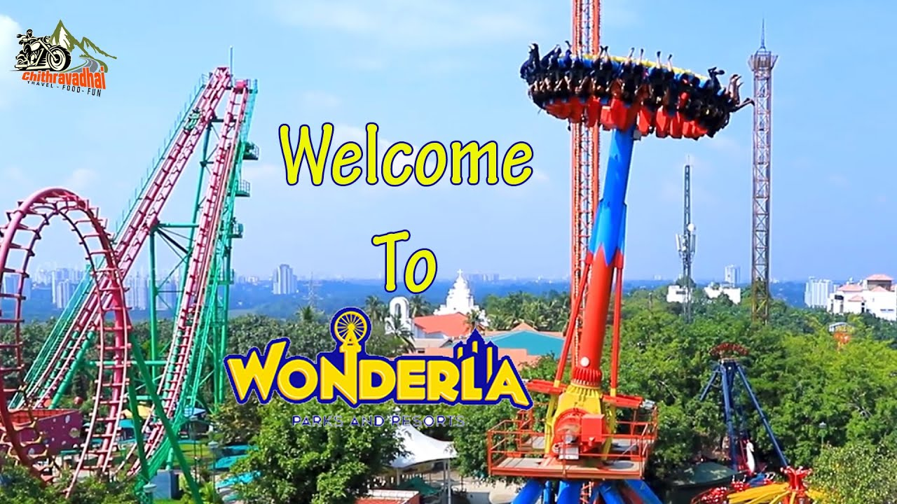

WONDARLA THIRILING RIDE |
|
|---|---|
 |
Wonderla, founded by Kochouseph Chittilappilly and his son Arun Chittilappilly, began with the opening of Veegaland in Kochi in 2000. The success of this park led to the launch of their second, larger project in Bengaluru in 2005, which was later rebranded as Wonderla in 2011. The chain has since expanded to Hyderabad (2016) and is known for its high-safety, land-based, and water-based thrill rides. |